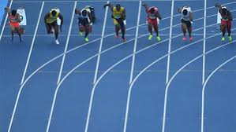

Definición
El atletismo es una de las competencias deportivas más características importantes de los Juegos Olímpicos. Se basa en la resolución de diferentes tipos de carreras, marchas, lanzamientos, saltos y otros que pueden variar en términos de velocidad, resistencia o distancia. Los deportistas pueden realizarlas de manera individual o grupal cuando se trabaja en postas, y pueden además participar en diversas opciones.
Usain Bolt. Jamaicano es este velocista que es uno de los referentes en los últimos años. Tiene en su poder no sólo seis medallas olímpicas y cinco medallas mundiales sino además diversos records individuales en los 100 y 200 metros lisos donde el participo por varios juegos siendo el rey de la velocidad.